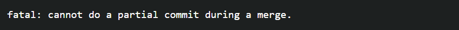

チーム開発研修練習：teamC
最終編集日: 2024年5月2日
目次
⚠️本ページの内容は最終編集日時点での筆者の知識によることと、初学者にもわかりやすい表現を優先して書かれていることにより正確でない場合があります。誤りを発見した際には優しくこっそり教えていただけると幸いです。
コンフリクトについて共通の認識を持とう
コンフリクトとは
"conflict"は和訳すると「衝突, 対立」であり、Gitではブランチをmergeする際に互いの変更点が重なってしまうことを意味します。簡単にいうと、同じファイルを同時に編集しその内容が異なるときにGitHubがどちらを優先してよいのか分からずmergeが突っぱねられてしまうということです。コンフリクトが起こってしまうと、mergeすることができません。ただし、コンフリクトは悪いことでもチームに迷惑をかけることでもありません。コンフリクトが起きてもGitHub上でmergeできないだけなので、元のファイルが壊れるとか最初からコードを書き直すといったことにはならないからです。焦って何かを削除したり権限を変更したりせず、後述の手順を守って落ち着いて対処しましょう。
というのが一般論ですが、teamCではローカル上でmergeテストをしてからリモートリポジトリにpushするというルールを設けることにするため、そもそもGitHub上でコンフリクトは起きないはずです。それでも起きてしまった場合の対処法も記載するので参考にしてください。
コンフリクトの原因
コンフリクトの発生原因をもう少し正確に書くと、同じファイルの同じ行が同じブランチから派生した別ブランチのコミットで変更されているときに、派生元のブランチにmergeしようとすると発生します。したがって、例えばブランチAがファイルXの最終行を1行分改行してmerge, ブランチBがファイルXの最終行を2行分改行してmergeするだけでもコンフリクトが発生します。文字を何も入力しなくても、1行の改行だけで変更したと見なされるからです。反対に、ブランチAがファイルXの2行目を編集してmerge、ブランチBがファイルXの3行目を編集してmergeした場合は、同じ行の変更がないためコンフリクトは発生しません。しかし、ソースコードの編集は通常複数の行をまたぐため、基本的に同時に編集したらコンフリクトが発生すると認識しておけばよいでしょう。
コンフリクトの解消
コンフリクトが起きると、解消するまで開発が遅滞します。だったらコンフリクトが起きないようにすればいいじゃないかと思って予防法を調べてみても、「同時に同じファイルを編集しない」くらいしか出てきません。思うに、コンフリクトは発生するのが前提で、対処しながら開発を進めるのが基本なのでしょう。teamC内だけなら、ファイルを編集中にはその合図を出し、合図がないときに編集を始めるといった方法で恐らくコンフリクトをほとんど発生させずに進められると思いますが、いざプロジェクトに配属されたときにコンフリクトに対処できない、とならないようにチーム開発研修においてもコンフリクトを発生させながら進めていく方針とします。
コンフリクトの解消方法はこのサイトを参考にしてください。
サイトへGO!!いくつか提示されている解決手法のうち、「手動でファイルを修正する」が一番全メンバーの成長につながると思います。ソースコードの理解が必要となるので難しいですが、できればそうしたいですね。簡単にいうと、コンフリクトが起きたファイルを特定し、該当箇所を手動で修正し（ここでソースコードの理解が必要なので分からなかったら訊く！）、addしてcommitする。このcommitの際、次のようなエラーが出ることがあります。
この場合はcommitに -i オプションをつければ、コンフリクトしたmergeを終了してcommitしてくれるのでうまくいくはずです。
git commit -i hoge.txt
リモートリポジトリにpushするまでの流れ
miroの手順書はあくまで最低限GitHubを使うための覚書です。teamCでは、実際の開発現場のルールにより近づけるために以下の手順に従ってください。なお、Gitを用いた開発の流れを示したgit flowというものがありますが、その簡易版のようなものとなっています。
- miroの手順書の10まで（リモートリポジトリをoriginに設定するまで）が完了している状態にする。
- ローカルのdevelopブランチにリモートリポジトリ上のdevelopブランチの最新の状態を持ってくる。
git pull origin develop
- featureブランチを作成。ブランチの名前はfeature_〇〇 ※追加する機能が分かるようなものにする。
git checkout -b feature_hoge
- ファイルを編集または新規作成してソースコードを書き、機能を実装する。そのファイル単体でテストできるものであるなら、思い通りの挙動をするか確認する。大丈夫そうならaddしてcommitする。どのようなテストをするかは各自の判断に任せます。不安だったら訊いてください。
- developブランチにmergeしても大丈夫かローカルで確認する。まずはdevelopブランチに移動。
- コンフリクトが発生した場合、上記のコンフリクトの解消を参考にして修正する。修正が完了したら、3のテストから再度行う。
- ローカルでコンフリクトが発生しなくなったら、リモートリポジトリにpushする。ちなみに、このときの-uオプションでupstreamを設定している。
git push -u origin develop
- push後の操作はmiroの手順書の15以降を参考にする。訂正するよう言われた場合、1から再度行う。
- featureブランチがリモートリポジトリでdevelopブランチにmergeされたのを確認して、ローカルのfeatureブランチも削除する。
git branch -d feature_hoge
git add hoge.java
git commit -m "hoge機能の実装"
git checkout develop
リモートリポジトリの最新のdevelopの状態にするためにpullする。ちなみに、上流ブランチがorigin/developに設定されている場合は下記のコードの"origin develop"は不要です。よく分からなかったらそのままでも問題ありません。
git pull origin develop
featureブランチに移動し、developブランチをmergeする。
git checkout feature_hoge
git merge develop